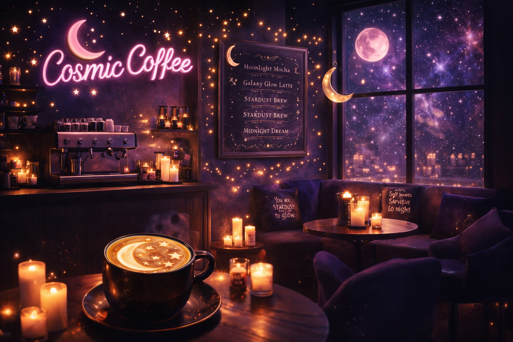
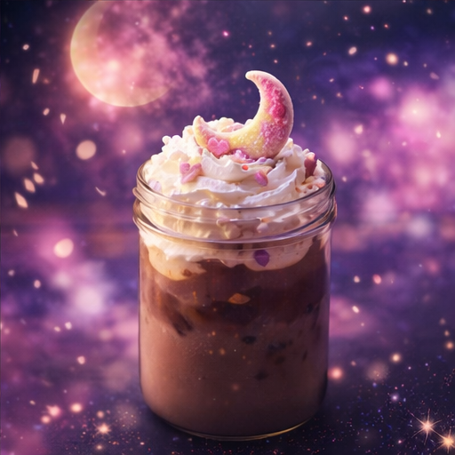

✨ Star dust creations ✨
Welcome to Cosmic Coffee, a dreamy little café filled with celestial drinks, cozy vibes, and positive energy. Every corner of our café is inspired by moonlight, stardust, and the beauty of the night sky. Guests come here to relax and step away from the stress of everyday life. The soft glow of candles, shimmering lights, and celestial decor creates a warm and enchanting atmosphere. Our goal is to make each visit feel comforting, creative, and full of wonder. Whether someone comes in for a drink, a peaceful moment, or a little inspiration, Cosmic Coffee offers a space to feel at home. 🌙✨

✨ Why Guests Love Cosmic Coffee ✨
- Celestial-inspired drinks and desserts
- Cozy seating with magical glowing décor
- Positive quotes and uplifting vibes
- A dreamy space to relax and recharge
🌙 Our Magical Atmosphere 🌙
Cosmic Coffee is designed to feel like a peaceful escape from everyday stress and noise. Soft glowing lights, celestial décor, and calming colors help create a dreamy and welcoming environment. Guests can sit comfortably while enjoying warm drinks and relaxing music that matches the cosmic theme. The café encourages creativity, reflection, and quiet moments of inspiration. Every detail in the space is meant to help visitors feel calm, cozy, and uplifted. Spending time at Cosmic Coffee allows people to recharge and enjoy a magical atmosphere inspired by the night sky.
